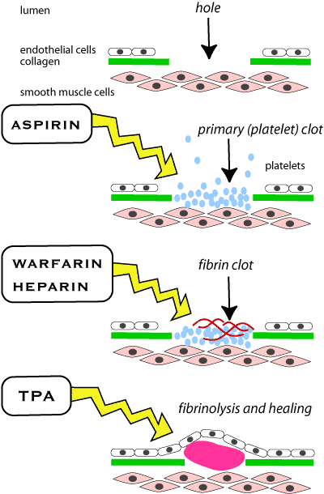

Drugs used to treat clots
There are many drugs used in people to break clots down and restore blood supply to areas distal to the clot (mainly used in myocardial infarction). These are not usually used in animals because they are very expensive and the damage is very gross / irreversible when the animal is presented for treatment (drugs usually have to be given within 3 hours to be effective). In veterinary practice it is usual to try to prevent further clotting using anticoagulants or antiplatelet drugs. All these drugs can cause massive bleeding - animals have completely bled out after their use. As a broad generalisation, anticoagulants are used to treat venous thrombosis, antiplatelet drugs for arterial thrombosis.

Aspirin, warfarin and heparin prevent clots; tissue plasminogen activator breaks them down.
- parenteral anticoagulants
- oral anticoagulants
- anti-platelet drugs
- fibrinolytics
- anticoagulants for collecting blood
| 6 Cardiovascular index |
| |
copyright
Massey University
|